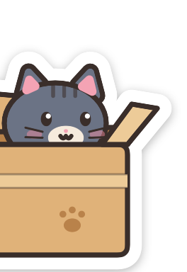
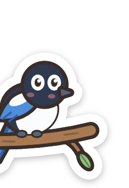

Déjaselo al gato. Recógelo después.
PawShelf es un estante para tu Mac. Un pequeño personaje se asoma desde el borde de la pantalla y guarda archivos, carpetas, imágenes, enlaces y texto mientras cambias de app.
Descargar en el Mac App StorePara macOS 14 o posterior, en Mac con Apple silicon e Intel.
Cómo funciona

Suéltalo en la pestaña
Arrastra lo que quieras hasta el personaje del borde de la pantalla. ¿Te queda lejos? Agita el cursor mientras arrastras y el estante se abrirá justo al lado.

Sigue con lo tuyo
Cambia de app, de Space o de ventana a pantalla completa. La pestaña sigue en el borde y tus ítems siguen ahí después de reiniciar.

Arrástralo fuera
Suelta los ítems en el Finder, Mail, un chat o un formulario de subida. Selecciona varios para sacarlos a la vez.
Elige quién guarda tus cosas
Doce personajes, cada uno con su propia manera de guardar las cosas. Algunas costumbres hacen un trabajo de verdad: los mofletes del hámster muestran lo lleno que está el estante, la ardilla te avisa de los ítems olvidados y el hielo del pingüino derrite los ítems que ya no necesitas.
-


Gato Cajita
Esconde tus cosas en una caja de cartón
-


Hámster Mofletudo
Se le inflan los mofletes a medida que se llena el estante
-


Ardilla Bellotera
Recuerda las bellotas olvidadas y sugiere hacer limpieza
-


Pingüino Nevera
Guarda las cosas en hielo hasta que se derriten
-


Búho Trasnochador
Despierto de noche, dormilón de día
-


Urraca Brillitos
Colecciona enlaces e imágenes relucientes
-


Perro Recadero
Te trae tus cosas cuando las necesitas
-


Canguro de Bolsillo
Guarda las cosas a salvo en su bolsa
-


Pelícano
Abre su gran pico para atrapar lo que sueltes
-


Pulpo Ochobrazos
Sujeta una cosa con cada brazo
-


Topo Tunelero
Guarda las cosas en su madriguera
-


Tortuga Caparazón
Protege las cosas bajo su caparazón
Pasa el puntero por una pegatina para saludar.
Todo lo que un estante debe hacer
Historial del portapapeles
Tus últimas 50 copias, a mano en el estante. Las copias que los gestores de contraseñas marcan como privadas nunca se guardan.
Recopilar archivos nuevos
Elige una carpeta, como Capturas o Descargas, y los archivos nuevos aparecerán solos en el estante.
Buscar dentro de imágenes
Encuentra una captura por las palabras que contiene. El texto se reconoce en tu Mac.
Títulos e iconos de enlaces
Los enlaces muestran el título y el icono de la página, no solo una dirección.
Quitados recientemente
¿Quitaste algo por error? Recupéralo desde el menú ⋯ del estante.
Previsualizar y compartir
Pulsa la barra espaciadora para usar Vista Rápida o envía ítems por AirDrop y Mensajes.
Colecciones
Agrupa ítems relacionados en colecciones y muestra una cada vez.
En todos los Spaces
La pestaña te acompaña en todos los Spaces y queda por encima de las apps a pantalla completa, en el borde izquierdo o derecho.
Lista para VoiceOver
Todos los botones e ítems del estante tienen una etiqueta de VoiceOver.
Nada que permitir en Ajustes del Sistema
PawShelf no pide permiso de Accesibilidad ni de Grabación de pantalla. Funciona dentro del App Sandbox y solo abre lo que tú le das. Lo que pones en el estante se queda en tu Mac.